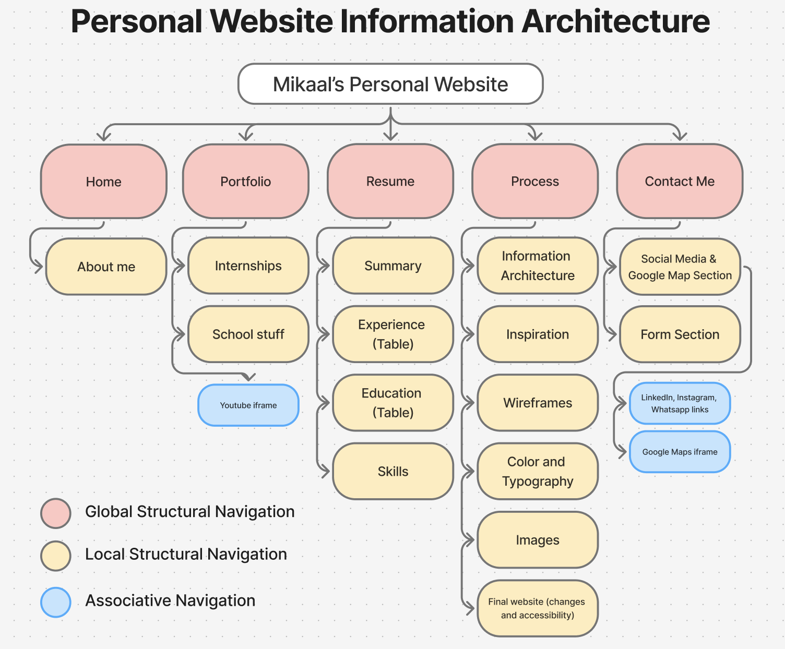
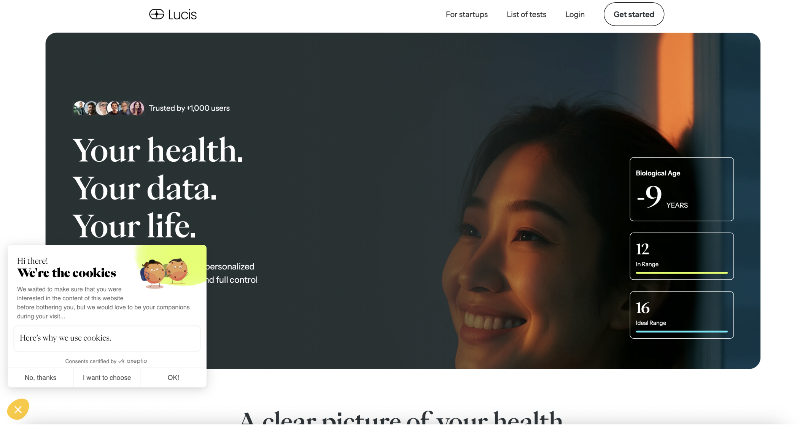
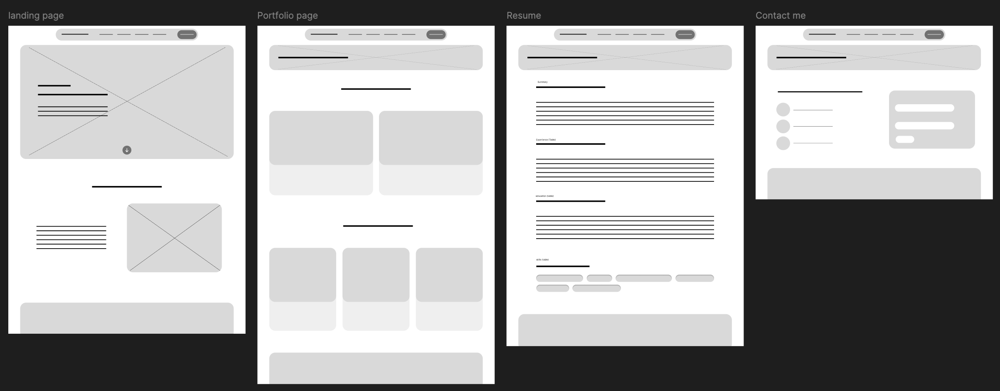
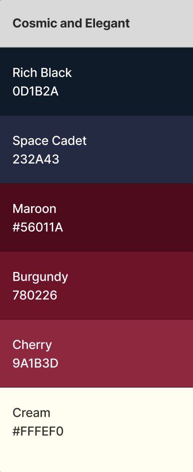
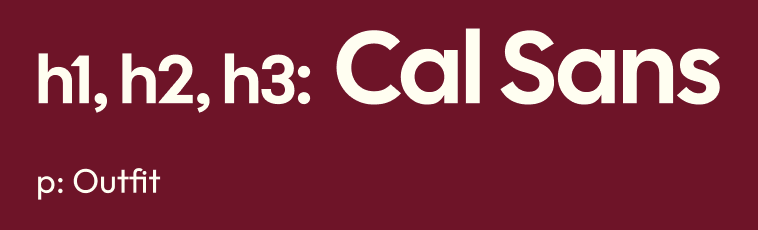
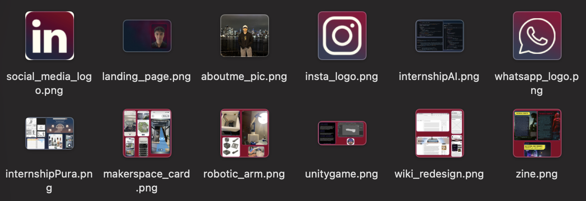
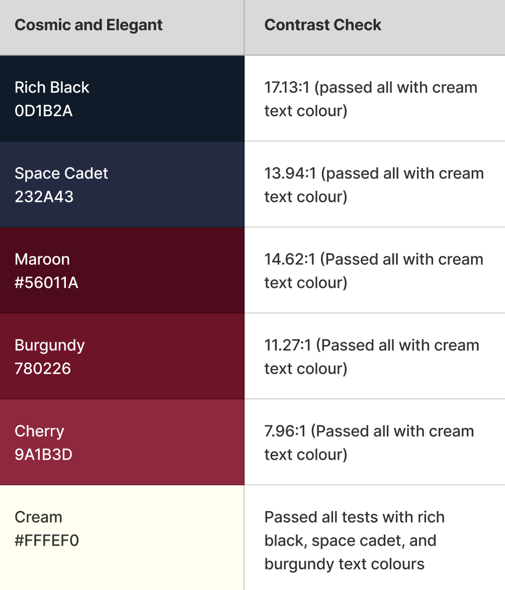

The Process of Creating This Website
Information Architecture

The information architecture of my personal website mostly follows the guidelines of the assignment. The five pages function as the global navigation, placed within the navigation bar. Whereas, the structural local navigation highlight the different sections of each page as the user scrolls. To reduce cognitive load, I seperated the portfolio page into two parts. I also wanted to emphasize the internship experiences over the school projects which is why structurally, it appears first. The resume page follows the same structure as my actual resume as I believe, its current structure its sufficient for anyone wanting to read the resume swiftly. The structure of the Process page is the most complex due to the number of different components I must discuss. I attempted to reduce textual clutter as much as possilbe whilst making it easy for the reader to navigate through the different sections without getting overwhelmed and confused. This is why accessibility is not its own section but rather, its under "Final website" with its own h3 heading, because its a briefly discussed component within the final website. The contact section presents the social media links and the google maps iFrame side by side, whilst the form is in its own section. Again, this is to reduce cognitive load because places where the uesr can input text shouldn't have too many distractions.
Inspiration

The inspiration behind my landing page comes from this website, Lucis Life, I analyzed in a competitve audit during my internship. I liked the fact that it was a large rectangualar image with rounded corners and how the navigation bar morphed into a pill shape as the user scrolled. The design language of my website also shares similarity to my previous designs that can be viewed in the portfolio page- elements such as the header, the gradients, and the fonts. Within the skills section in the resume page, I took inspiration from the pill shaped filters that many apps and sites have adopted which is why it looks very familiar to users at first glance. I also admire Apple's design language, specifically the rounded corners and the depth the new operating systems have. That was my inspiration behind making the header frosted glass, the shadows, as well as the abundance of rounded corners.
Wireframes

The wireframes showcase four pages of my personal website. During the creation of these wireframes, I ensured that sizings of components and gaps would be accurate and in multiples of 2px so that when coding, it makes it much easier to translate. Pages other than the home page, feature a smaller rectangular box with the h1 header in place. This ensures visual consistensy and a design language that the users can understand as the start of a new page. Most components are 32px in terms of corner radius however, the nested corner radius formula is applied to some components inside others.
The porfolio page utilizes a card design to ensure the best scannability and organization without the user having to scroll through each project. The resume page wireframe is supposed to have tables under the two middle sections, experience and education. However, due to Figma not having a native table builder, I used lines. The skills section would have each skill inside a pill-shaped container. This decision would enhance scannability and reduce cognitive load compared to having a long list of skills to the left.
Color & Typography
Color Palette

The theme of my color palette is cosmic and luxurious. I personally admire the retro futuristic Sci-fi design language but I also like elegant, luxurious UI's which is why I chose this color palette. Using a color palette picker, I selected a primary color of dark blue and a secondary color of burgundy, hence the different shades of blue and burgundy. Instead of plain white, I went for a slightly warmer cream white to enhance the theme of luxury. The alternate shades are useful for hover states and gradients. For example, the "Contact Me" button uses burgundy and cherry as the hover state color. Most text boxes like this one utilize a subtle rich black to space cadet gradient to add depth and quality to the UI.
Typography

Both the headings font and the paragraph font were found on Google fonts. Cal Sans was used for the headings to create strong visual hierarchy and to draw attention to different sections of the page. I liked how the font was similar to Outfit yet bold and distinct. There's different variations when it comes to my use of Cal Sans. For example, within the porfolio, I took advantage of italics and color to emphasize key words like "experiences" and "notable", following modern typography conventions on websites. The body font is outfit as it looks approachable, friendly, and modern.
Images

The image above showcases all images used within the website except for on the process page as the process page. These images were either edited on photoshop or taken directly from the phone camera. Starting with the social media icons, I took transparent images of the icons from the internet then added a background gradient that follows my website's color palette. This was done by adding a gradient overlay within blending options. I also added a cream color overlay to the icon itself in order to use the negative space of the site's background color. My landing page image used the Space Cadet color as the background and using the paint brush tool, I softly painted burgundy spots with less opacity. I then added a noise filter to the background. Over the background, I edited my LinkedIn portrait by removing the background using the object selection tool, then placed it on a rectangle with rounded corners. I added a radial gradient overlay to my portrait and a burgundy outer glow.
For the portfolio collages, I used rectangles with rounded corners and a white outer glow. Then set the pictures of my work as clipping masks over these rectangles. For the About me section, I used a more personal photo of me in New York to humanize and build trust to the portfolio.
The Final Website
Changes
There has been quite a few changes from the initial plans and wireframes. Firstly, I removed the arrow button within the landing page. The idea was that the user would know where to start by scrolling down or clicking on the button which would auto scroll to the About Me section. This idea was scrapped because it was out of the course's scope and I found it difficult to style. I also added padding, background gradient, and border radius to most of the paragraphs on the website- they're inside a container unlike the wireframes. This is to reduce excessive empty space and add depth to the website. The next change is within the footer. Initially, I had contact information links and an embedded Google Maps iframe. After reading the handout again, I realized I needed rich media content in the contact page so I replaced the map in the footer with navigation links. This change also made much more sense because the contact page felt complete and the footer having the navigation links actually makes it faster for the user to go to the next page once they're at the bottom. In turn, the contact page was changed due to the addition of the map. As stated previously, the form was moved to its own section so that it could reduce cognitive load and follow top-down processing. It is also important to note that only the LinkedIn social media link works. This is intentional as I prefer not to share the Instagram and Whatsapp accounts but I've included them for visual completeness as it would've felt lackluster without them.
Accessiblity

Accessibility is incredibly important in this day and age where all people, young or old, are utilizing technology. This is why it was important for me to ensure I meet some accessiblity standards within the scope of this course. Firstly, I checked the color contrast ratios for each color in my palette with the foreground color being cream and they all passed. Moreover, every non-decorative image has alt text for screen readers or to give context when the web page doesn't load fully. Furthermore, I inclucded aria-labels for the videos as well as the inputs within the form. I defined the language as english in each html file to help screen readers. I utilized some semantic elements such as header, nav, footer, table, and form to allow screen readers to better interpret the structure of the website.
Future Iterations
Because this is one of my first HTML CSS projects, there were a few features I wished to incorperate but couldn't. For example, within the portfolio page, the images can appear small therefore, the only way users can see the image in full is by either zooming in on their browser or downloading the image. In a future iteration, I wish to add an expand hover state or button so that the users can see the image in large. One big feature the website is lacking is a responsive user interface. Responsive UI's are especially helpful for users who want to increase text size or multitask as it is an accessiblity requirement. Finally, animations would be great to improve the experience for the user and moreover, adding more complex shapes could improve the aesthetics. Nevertheless, I have learnt a lot during the process of creating this website and I am extremely happy with the output.